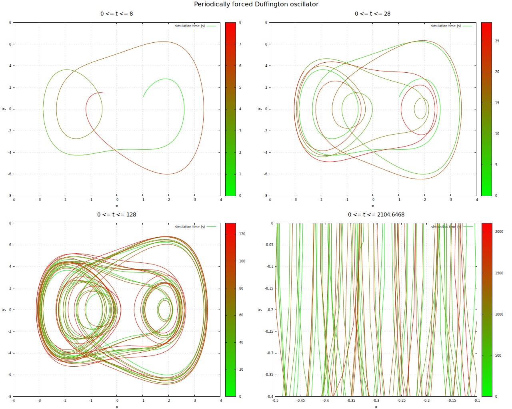

Updates
Ich habe bereits beim letzten Artikel über chaotiche Systeme angemerkt, dass ich beim Studieren der Literatur mehrere mir bislang unbekannte Systeme entdeckt habe - heute möchte ich ein weiteres näher vorstellen
Das System stellt - wie auch das Van-der-Pol-System einen chaotischen Oszillator dar. Dieses System wurde bereits von verschiedensten Autoritäten sehr gründlich untersucht. Trotzdem kann man beim Spielen mit den unterschiedlichsten Parametersätzen immer noch eine Menge Spaß haben - und noch eine Menge lernen.
Ich habe hier eine etwas andere Form der Visualisierung genutzt: die vier Ansichten in der Abbildung zeigen das System, bzw. dessen Trajektorie jeweils vom Start bis zu einem immer weiter in der Zukunft liegenden Endpunkt. Die vierte Darstellung ist eine, in der ich einen kleinen Ausschnitt des Phasenraumes sehr stark vergrößert habe - man kann sehen, dass die Tatsache, dass das System einen Strange Attractor ausbildet dafür sorgt, dass es als ganzes ergodisches Verhalten zeigt

Periodisch angeregter Duffigton-Oszillator
Aktualisierung vom 26. Februar 2020
Artikel, die hierher verlinken
Aizawa-System
01.04.2020
Und wieder habe ich mich mit chaotichen Systemen beschäftigt - dieses Mal, um für mich neue Visualisierungsmethoden zu untersuchen.
Magnetisches Pendel
22.03.2020
da seit meinem letzten Artikel zum Thema Chaos und - im weiteren Sinne Fraktale - bereits einige Zeit vergangen ist hier noch ein Nachtrag aus den Untiefen meines Massenspeichers (Festplatte darf man ja heute nicht mehr sagen...)
Jupyter self-hosted
21.02.2020
Nachdem ich in letzter Zeit wieder verstärkt von meinen Weiterbildungsbemühungen bezüglich Docker und Chaos berichte, hier ein Artikel, der beide Gebiete betrifft...


Vor 5 Jahren hier im Blog
-
Seerosen falten
16.01.2016
Aus aktuellem Anlass rausgekramt: Seerosen Level 1 und 2: Level 1 - Servietten, Level2: relativ hartes Papier.
Weiterlesen...
Tags
Android Basteln C und C++ Chaos Datenbanken Docker dWb+ ESP Wifi Garten Geo Git(lab|hub) Go GUI Hardware Java Jupyter Komponenten Links Linux Markup Music Numerik PKI-X.509-CA Python QBrowser Rants Raspi Revisited Security Software-Test sQLshell TeleGrafana Verschiedenes Video Virtualisierung Windows Upcoming...
Neueste Artikel
-
 Neues GitHub-Projekt: duckylights
Neues GitHub-Projekt: duckylights
Nachdem ich mich relativ spät im Leben dazu durchgerungen habe, endlich eine ordentliche Tastatur zu versuchen und auch dieses Mal wirklich eine bekommen hatte (Caseking hatte die Bestellung zwar angenommen, mich aber hinterher darüber informiert, dass das Modell nicht nur nicht lieferbar war, sondern auch nicht klar sei, ob sich dieser Zustand jemals wieder ändern würde), wollte ich wissen, wie einfach es wäre, die Beleuchtung unter Linux nutzen zu können.
Weiterlesen... -
 TeX in Gitlab
TeX in Gitlab
Nach meinen Arbeiten zur Erstellung eines Docker-Containers, der die Funktionalität von WireViz als Microservice verfügbar macht habe ich die entsprechenden Änderungen beim Projekt als Pull-Request eingereicht.
Weiterlesen... -
Hardware für Netzwerk Degrader
Vor ungefähr einem Jahr berichtete ich über den letzten Stand meines Projektes "Schlechtes Netz" - eines smarten Netzwerkkabels mit konfigurierbarer Übertragungsqualität.
Weiterlesen...
Manche nennen es Blog, manche Web-Seite - ich schreibe hier hin und wieder über meine Erlebnisse, Rückschläge und Erleuchtungen bei meinen Hobbies.
Wer daran teilhaben und eventuell sogar davon profitieren möchte, muß damit leben, daß ich hin und wieder kleine Ausflüge in Bereiche mache, die nichts mit IT, Administration oder Softwareentwicklung zu tun haben.
Ich wünsche allen Lesern viel Spaß und hin und wieder einen kleinen AHA!-Effekt...
PS: Meine öffentlichen GitHub-Repositories findet man hier.